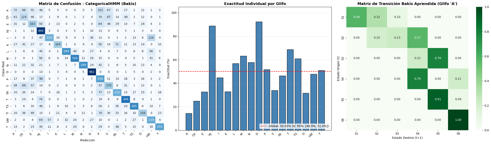
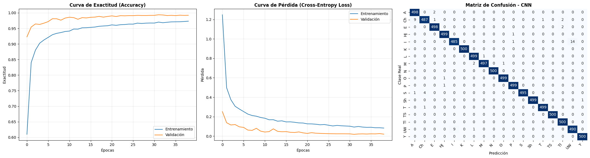

En este apartado se contrasta el diseño, implementación y comportamiento empírico de dos paradigmas de modelado sobre el conjunto de datos de glifos del alfabeto náhuatl (\(45{,}000\) muestras distribuidas equitativamente en \(18\) clases, a razón de \(2{,}500\) imágenes de \(28 \times 28\) píxeles por grafema): un enfoque generativo secuencial basado en Modelos Ocultos de Markov Categóricos con topología de Bakis (CategoricalHMM) y un enfoque discriminativo espacial profundo basado en Redes Neuronales Convolucionales (CNN).
Para garantizar una comparación estadística rigurosa y libre de sesgos de muestreo, ambos modelos se entrenan y evalúan bajo condiciones experimentales estrictamente idénticas: resolución monocromática de \(28 \times 28\) píxeles, polaridad normalizada de tinta activa, partición estratificada \(80\% / 20\%\) (\(36{,}000\) imágenes de entrenamiento y \(9{,}000\) de validación sobre exactamente los mismos archivos mediante random_state = 123), e intervalos de confianza al \(95\%\) estimados mediante remuestreo bootstrap no paramétrico (\(B = 200\) réplicas).
7.1 Implementación del modelo HMM Categórico (Topología de Bakis)
El enfoque basado en HMM reformula el reconocimiento de cada glifo como un problema de inferencia sobre secuencias unidimensionales observadas de izquierda a derecha. Se entrena un modelo generativo independiente \(\lambda_c = (\pi, A_c, E_c)\) por cada una de las \(18\) clases para clasificar nuevas muestras mediante la regla de máxima log-verosimilitud \(\hat{c} = \arg\max_{c} \log \mathbb{P}(Y \mid \lambda_c)\).
Código
# 1. Instalación de dependencias e importaciones!pip install hmmlearn opencv-python-headless scikit-learn matplotlib seaborn tqdm -qimport osimport cv2import timeimport loggingimport warningsimport numpy as npimport matplotlib.pyplot as pltimport seaborn as snsfrom tqdm import tqdmfrom sklearn.model_selection import train_test_splitfrom sklearn.preprocessing import LabelEncoderfrom sklearn.metrics import confusion_matrix, classification_report, accuracy_scorefrom hmmlearn.hmm import CategoricalHMMwarnings.filterwarnings("ignore")logging.getLogger("hmmlearn").setLevel(logging.ERROR)from google.colab import drivedrive.mount('/content/drive')# 2. Hiperparámetros y configuración experimentalDATASET_PATH ="/content/drive/MyDrive/nahuatl_dataset/dataset_hibrido_final"IMG_SIZE = (28, 28) # Misma resolución base que la CNN (H=28, W=28)WIN_WIDTH =4# Ancho de la ventana deslizante vertical (w)STRIDE =2# Paso horizontal (s) -> T = floor((28-4)/2) + 1 = 13N_STATES =6# Estados ocultos ordenados de izquierda a derecha (N)BAKIS_DELTA =2# Orden de salto permitido en topología de Bakis (Delta=2)N_SYMBOLS =256# Alfabeto discreto de 8 bits (2^8 = 256 símbolos)N_ITER =100# Iteraciones máximas de Baum-Welch (EM)TRAIN_RATIO =0.80# Partición 80% entrenamiento / 20% validaciónRANDOM_STATE =123# Semilla reproducibleN_BOOTSTRAP =200# Réplicas bootstrap para intervalos de confianza
Por qué se eligen estos parámetros y configuración:
Resolución unificada IMG_SIZE = (28, 28) en escala de grises: Mantener exactamente la misma cuadrícula bidimensional de \(28 \times 28\) píxeles que recibe la CNN elimina cualquier ventaja artificial derivada de interpolaciones de mayor resolución, asegurando que las diferencias observadas provengan exclusivamente de la naturaleza matemática de cada modelo.
Ventana deslizante vertical (WIN_WIDTH = 4, STRIDE = 2): Recorre el glifo de izquierda a derecha generando \(T = \lfloor (28 - 4)/2 \rfloor + 1 = 13\) rebanadas verticales de dimensión \(28 \times 4\). Un ancho de \(4\) píxeles captura la estructura vertical local del trazo, mientras que el desplazamiento de \(2\) píxeles introduce un \(50\%\) de solapamiento espacial que suaviza las transiciones entre observaciones consecutivas.
Alfabeto categórico de\(M = 256\) símbolos y \(N = 6\) estados de Bakis: En lugar de vectorizar píxeles crudos en alta dimensión (lo que induce dispersión y singularidades en covarianzas continuas), cada ventana se proyecta en un símbolo discreto de \(8\) bits, permitiendo emplear un CategoricalHMM con \(6\) fases estructurales progresivas y salto máximo \(\Delta = 2\).
Código
# 3. Extracción de rasgos estructurales y cuantificación de 8 bitsdef quantize_uniform(val, vmin, vmax, n_bins):"""Función de cuantificación uniforme q(v) en {0, ..., n_bins - 1}.""" val_clipped = np.clip(val, vmin, vmax) q =int(np.floor(((val_clipped - vmin) / (vmax - vmin)) * n_bins))returnmin(q, n_bins -1)def extract_discrete_sequence(img_norm, win_width=4, stride=2, ink_thresh=0.25):""" Proyecta una imagen 2D (28x28) en una secuencia 1D de símbolos discretos en {0, ..., 255} mediante ventana deslizante vertical y codificación de 8 bits. """ H, W = img_norm.shape sequence = []for x inrange(0, W - win_width +1, stride): window = img_norm[:, x:x + win_width] mass = np.sum(window)# Perfil de proyección horizontal de la ventana h_t(i) row_profile = np.mean(window, axis=1) active_rows = np.where(row_profile > ink_thresh)[0]if mass <=1e-4orlen(active_rows) ==0:# Ventana vacía (fondo sin tinta) mu_y =0.5 delta_p =0.0 transitions =0else:# 1. Centro de gravedad vertical normalizado mu_y(t) en [0, 1] row_indices = np.arange(H).reshape(-1, 1) mu_y = np.sum(row_indices * window) / (mass * (H -1))# 2. Perfiles superior e inferior -> espesor de la envoltura Delta_P(t) p_sup = active_rows[0] p_inf = active_rows[-1] delta_p = (p_inf - p_sup +1) / H# 3. Transiciones de estado fondo-tinta z(t) binary_profile = (row_profile > ink_thresh).astype(int) transitions =int(np.sum(np.abs(np.diff(binary_profile))))# Cuantificación: 3 bits (8 niveles) + 3 bits (8 niveles) + 2 bits (4 niveles) q_mu = quantize_uniform(mu_y, 0.0, 1.0, 8) # {0..7} q_dp = quantize_uniform(delta_p, 0.0, 1.0, 8) # {0..7} q_tr =min(transitions, 3) # {0..3}# Codificación entera de 8 bits: y_t in {0, ..., 255} symbol =32* q_mu +4* q_dp + q_tr sequence.append([symbol])return np.array(sequence, dtype=np.int32)def compute_shannon_entropy(sequences, n_symbols=256):"""Calcula la entropía de Shannon H(Y) en bits sobre el alfabeto observado.""" all_symbols = np.concatenate(sequences).ravel() counts = np.bincount(all_symbols, minlength=n_symbols) probs = counts[counts >0] /len(all_symbols)return-np.sum(probs * np.log2(probs))# 4. Carga y preprocesamiento del dataset (28x28)def load_dataset_hmm(dataset_path): sequences, labels = [], [] class_names =sorted([ d for d in os.listdir(dataset_path)if os.path.isdir(os.path.join(dataset_path, d)) ])for class_name in class_names: class_dir = os.path.join(dataset_path, class_name) img_files =sorted([ f for f in os.listdir(class_dir)if f.lower().endswith(('.png', '.jpg', '.jpeg', '.bmp')) ])for fname in tqdm(img_files, desc=f"Extrayendo rasgos '{class_name}'", leave=False): img_path = os.path.join(class_dir, fname) img = cv2.imread(img_path, cv2.IMREAD_GRAYSCALE)if img isNone:continueif img.shape != IMG_SIZE: img = cv2.resize(img, IMG_SIZE, interpolation=cv2.INTER_AREA) img_norm = img.astype(np.float32) /255.0# Asegurar polaridad: tinta = valores altos (>0.5), fondo = cerca de 0if np.mean(img_norm) >0.5: img_norm =1.0- img_norm seq = extract_discrete_sequence(img_norm, WIN_WIDTH, STRIDE)iflen(seq) >= N_STATES: sequences.append(seq) labels.append(class_name)return sequences, np.array(labels), class_namest0_prep = time.time()sequences, labels, class_names = load_dataset_hmm(DATASET_PATH)prep_time = time.time() - t0_prepentropy_bits = compute_shannon_entropy(sequences, N_SYMBOLS)# Partición estratificada 80% / 20%le = LabelEncoder()y_encoded = le.fit_transform(labels)seq_train, seq_val, y_train, y_val = train_test_split( sequences, y_encoded, train_size=TRAIN_RATIO, random_state=RANDOM_STATE, stratify=y_encoded)
Por qué se diseña así la extracción de rasgos y la partición:
Normalización de polaridad (np.mean(img_norm) > 0.5): Garantiza que los píxeles pertenecientes al trazo activo tengan intensidades positivas cercanas a \(1\) y el fondo cercano a \(0\), condición necesaria para que el cálculo del centro de gravedad \(\mu_y(t)\) y los perfiles de envoltura \(P_{\text{sup}}(t), P_{\text{inf}}(t)\) midan correctamente la masa de tinta.
Codificación combinatoria de\(8\) bits (\(32 \cdot q_{\mu} + 4 \cdot q_{\Delta P} + q_{z}\)): Sintetiza simultáneamente la posición vertical del trazo (\(3\) bits), su grosor o apertura vertical (\(3\) bits) y su complejidad de cruces fondo-tinta (\(2\) bits) en un entero único en \(\{0, \dots, 255\}\).
Ordenamiento determinista y partición estratificada (sorted(...), random_state = 123): Asegura que las \(36{,}000\) muestras de entrenamiento y \(9{,}000\) de validación correspondan exactamente a los mismos archivos empleados posteriormente en la CNN.
Código
# 5. Construcción y entrenamiento de HMM categóricos con topología de Bakisdef build_bakis_categorical_hmm(n_states, n_symbols, delta=2, random_state=123):""" Inicializa un CategoricalHMM con topología izquierda-derecha de Bakis: - pi = (1, 0, ..., 0) - a_ij = 0 para j < i y j > i + delta """ rng = np.random.default_rng(random_state) model = CategoricalHMM( n_components=n_states, n_features=n_symbols, n_iter=N_ITER, tol=1e-4, init_params="", # Preservar matrices estructuradas params="te", # Actualizar solo transiciones (t) y emisiones (e) random_state=random_state )# Vector inicial determinista en el primer estado startprob = np.zeros(n_states, dtype=np.float64) startprob[0] =1.0 model.startprob_ = startprob# Matriz de transición triangular superior en banda (Bakis) transmat = np.zeros((n_states, n_states), dtype=np.float64)for i inrange(n_states): max_j =min(n_states -1, i + delta) valid_cols = np.arange(i, max_j +1) weights = rng.uniform(0.3, 1.0, size=len(valid_cols)) transmat[i, valid_cols] = weights / np.sum(weights) model.transmat_ = transmat# Matriz de emisión inicializada cerca de uniforme emissionprob = rng.uniform(0.8, 1.2, size=(n_states, n_symbols)) emissionprob /= emissionprob.sum(axis=1, keepdims=True) model.emissionprob_ = emissionprobreturn modelt0_train = time.time()hmm_models = {}for idx, class_name inenumerate(class_names): class_seqs = [s for s, lab inzip(seq_train, y_train) if lab == idx] lengths = [len(s) for s in class_seqs] X_concat = np.vstack(class_seqs) model = build_bakis_categorical_hmm( n_states=N_STATES, n_symbols=N_SYMBOLS, delta=BAKIS_DELTA, random_state=RANDOM_STATE + idx ) model.fit(X_concat, lengths)# Suavizado de Laplace (epsilon = 1e-6) en emisiones para evitar log(0) eps =1e-6 model.emissionprob_ = (model.emissionprob_ + eps) / (1.0+ N_SYMBOLS * eps) hmm_models[class_name] = modeltrain_time = time.time() - t0_train# 6. Inferencia por máxima verosimilitud y remuestreo Bootstrapt0_inf = time.time()y_true_names = [le.inverse_transform([lbl])[0] for lbl in y_val]y_pred_names = []log_likelihood_matrix = np.zeros((len(seq_val), len(class_names)))for i, seq inenumerate(tqdm(seq_val, desc="Clasificando validación")):for c_idx, c_name inenumerate(class_names): log_likelihood_matrix[i, c_idx] = hmm_models[c_name].score(seq) best_c_idx = np.argmax(log_likelihood_matrix[i]) y_pred_names.append(class_names[best_c_idx])inf_time = time.time() - t0_infglobal_acc = accuracy_score(y_true_names, y_pred_names)# Intervalo de confianza Bootstrap (B = 200)rng_boot = np.random.default_rng(RANDOM_STATE)n_val =len(y_true_names)y_true_arr = np.array(y_true_names)y_pred_arr = np.array(y_pred_names)boot_accuracies = np.array([ np.mean(y_true_arr[idx] == y_pred_arr[idx])for idx in (rng_boot.integers(0, n_val, size=n_val) for _ inrange(N_BOOTSTRAP))])ci_low, ci_high = np.percentile(boot_accuracies, [2.5, 97.5])
Por qué se diseña así el entrenamiento e inferencia del HMM:
Preservación algebraica de la topología de Bakis (init_params="", params="te"): Al inicializar \(a_{ij}^{(0)} = 0\) fuera de la banda \(0 \le j - i \le 2\) y fijar \(\pi_1 = 1\), las ecuaciones de actualización multiplicativa del algoritmo Baum-Welch mantienen estrictamente en cero las transiciones prohibidas en cada iteración EM, forzando una alineación monotónica izquierda-derecha.
Suavizado de Laplace (\(\epsilon = 10^{-6}\)) en la matriz de emisión \(E\): Evita que la aparición en validación de un símbolo categórico no observado durante el entrenamiento de una clase colapse toda la log-verosimilitud de la secuencia a \(-\infty\).
7.2 Implementación del modelo CNN
El enfoque basado en Redes Neuronales Convolucionales sustituye la extracción manual de descriptores unidimensionales por jerarquías de filtros convolucionales bidimensionales entrenados extremo a extremo mediante retropropagación y optimización estocástica Adam.
Código
import osimport timeimport numpy as npimport tensorflow as tfimport matplotlib.pyplot as pltimport seaborn as snsfrom sklearn.model_selection import train_test_splitfrom sklearn.preprocessing import LabelEncoderfrom sklearn.metrics import confusion_matrix, classification_report, accuracy_scorefrom tensorflow.keras.callbacks import EarlyStopping, ModelCheckpointfrom google.colab import drivedrive.mount('/content/drive')# 1. Configuración y partición exacta idéntica a la del HMMDATA_DIR ="/content/drive/MyDrive/nahuatl_dataset/dataset_hibrido_final"RUTA_MODELO ="/content/drive/MyDrive/nahuatl_dataset/modelo_nahuatl.keras"IMG_SIZE = (28, 28)BATCH_SIZE =32TRAIN_RATIO =0.80RANDOM_STATE =123EPOCHS_MAX =60file_paths, labels = [], []class_names =sorted([ d for d in os.listdir(DATA_DIR)if os.path.isdir(os.path.join(DATA_DIR, d))])num_classes =len(class_names)for class_name in class_names: class_dir = os.path.join(DATA_DIR, class_name) img_files =sorted([ f for f in os.listdir(class_dir)if f.lower().endswith(('.png', '.jpg', '.jpeg', '.bmp')) ])for fname in img_files: file_paths.append(os.path.join(class_dir, fname)) labels.append(class_name)le = LabelEncoder()y_encoded = le.fit_transform(labels)train_paths, val_paths, y_train, y_val = train_test_split( file_paths, y_encoded, train_size=TRAIN_RATIO, random_state=RANDOM_STATE, stratify=y_encoded)# 2. Pipeline de datos en TensorFlow (tf.data)AUTOTUNE = tf.data.AUTOTUNEdef load_and_preprocess_image(path, label): img_bytes = tf.io.read_file(path) img = tf.io.decode_image(img_bytes, channels=1, expand_animations=False) img = tf.image.resize(img, IMG_SIZE) img = tf.cast(img, tf.float32) /255.0 img = tf.cond(tf.reduce_mean(img) >0.5, lambda: 1.0- img, lambda: img)return img, labeldata_augmentation = tf.keras.Sequential([ tf.keras.layers.RandomRotation(0.05), tf.keras.layers.RandomZoom(0.1), tf.keras.layers.RandomTranslation(0.05, 0.05)])train_ds = tf.data.Dataset.from_tensor_slices((train_paths, y_train))train_ds = train_ds.map(load_and_preprocess_image, num_parallel_calls=AUTOTUNE)train_ds = train_ds.cache().shuffle(5000, seed=RANDOM_STATE).batch(BATCH_SIZE)train_ds = train_ds.map(lambda x, y: (data_augmentation(x, training=True), y), num_parallel_calls=AUTOTUNE)train_ds = train_ds.prefetch(AUTOTUNE)val_ds = tf.data.Dataset.from_tensor_slices((val_paths, y_val))val_ds = val_ds.map(load_and_preprocess_image, num_parallel_calls=AUTOTUNE)val_ds = val_ds.batch(BATCH_SIZE).cache().prefetch(AUTOTUNE)
Por qué se diseña así el pipeline de datos de la CNN:
Alineación exacta de particiones (train_test_split con random_state = 123): Construir los objetos tf.data.Dataset a partir de las mismas listas ordenadas train_paths y val_paths garantiza que ambos modelos sean evaluados exactamente sobre los mismos \(9{,}000\) glifos de validación.
Aumentación estocástica en línea sin reflexiones: Se aplican pequeñas rotaciones (\(\pm 5\%\)), escalamientos (\(\pm 10\%\)) y traslaciones (\(\pm 5\%\)) únicamente sobre train_ds para reforzar la invarianza local sin alterar la orientación semántica de los caracteres.
Por qué se diseña así la arquitectura y optimización de la CNN:
Jerarquía convolucional con padding='same' (32 -> 64 -> 128 filtros de\(3 \times 3\)): Preserva la información de los bordes de la cuadrícula de \(28 \times 28\) antes de cada reducción espacial mediante MaxPooling2D (\(28 \to 14 \to 7 \to 3\)), extrayendo progresivamente bordes locales, curvaturas y configuraciones topológicas globales.
Regularización estructural (BatchNormalization, SpatialDropout2D(0.25) y Dropout(0.5)): Previene la co-adaptación de mapas de activación adyacentes y estabiliza el descenso estocástico con adam, mientras que EarlyStopping(patience=7, restore_best_weights=True) detiene automáticamente el entrenamiento al alcanzar el mínimo de pérdida de validación.
7.3 Resultados Experimentales y Análisis Comparativo
Ambos modelos fueron ejecutados sobre el conjunto completo de \(45{,}000\) muestras (\(36{,}000\) de entrenamiento y \(9{,}000\) de validación, con \(500\) instancias por glifo en validación). La Tabla 7.1 resume las métricas globales de desempeño, incertidumbre estadística y eficiencia computacional obtenidas.
Tabla 7.1: Comparación cuantitativa entre el Modelo Oculto de Markov Categórico de Bakis y la Red Neuronal Convolucional sobre el conjunto de validación (\(N_{\text{val}} = 9{,}000\)).
7.3.1 Análisis del desempeño del Modelo Oculto de Markov (CategoricalHMM)
La cuantificación de los descriptores geométricos produjo una entropía de Shannon de\(H(Y) = 4.3121 \text{ bits}\) sobre el máximo teórico de \(8.0000 \text{ bits}\), confirmando que la discretización conserva diversidad morfológica sin colapsar en un único símbolo trivial, aunque concentra la masa probabilística en aproximadamente \(2^{4.31} \approx 20\) configuraciones verticales dominantes.

Figura 7.1: Resultados del modelo CategoricalHMM con topología de Bakis (\(N=6\), \(\Delta=2\)): matriz de confusión sobre validación (izquierda), exactitud individual por glifo frente al promedio global (centro) y matriz de transición aprendida para el glifo A (derecha).
Como se observa en la Figura 7.1, el comportamiento del HMM revela tres hallazgos fundamentales:
Verificación empírica de la topología de Bakis: En el panel derecho de la Figura 7.1, la matriz de transición aprendida para el glifo A presenta valores estrictamente iguales a \(0.00\) en toda la región triangular inferior (\(j < i\)) y fuera de la banda \(\Delta = 2\), culminando en un estado final absorbente (\(a_{66} = 1.00\)). Esto demuestra que el algoritmo Baum-Welch respeta la restricción de progresión unidireccional de izquierda a derecha.
Alta discriminabilidad en glifos con envolvente asimétrica: Los caracteres O (\(\text{Recall} = 92\%\), \(\text{F1} = 0.80\)), HJ (\(\text{Recall} = 89\%\), \(\text{F1} = 0.55\)), T (\(\text{Recall} = 69\%\), \(\text{F1} = 0.65\)) y M (\(\text{Recall} = 63\%\), \(\text{F1} = 0.68\)) son identificados con alta eficacia gracias a que su perfil vertical cambia de manera distintiva a lo largo del eje horizontal.
Ambigüedad por proyección dimensional en glifos con trazos compuestos: Los glifos A (\(\text{F1} = 0.17\)), Ch (\(\text{F1} = 0.25\)) y E (\(\text{F1} = 0.31\)) presentan las tasas más altas de confusión cruzada con P y HJ. Asimismo, existe una confusión simétrica marcada entre I y UW (\(126\) muestras de I clasificadas como UW y \(57\) viceversa). Este fenómeno evidencia la limitación teórica anticipada en el mapeo \(\mathbb{R}^{28 \times 28} \to O^{13}\): al proyectar rebanadas verticales mediante centroides y espesores agregados, dos glifos distintos cuyas secciones verticales poseen similar altura media y grosor generan secuencias de símbolos casi idénticas.
7.3.2 Análisis del desempeño de la Red Neuronal Convolucional (CNN)
Por su parte, la arquitectura convolucional alcanzó una exactitud global de\(99.38\%\) (\(\text{IC } 95\%: [99.23\%, 99.54\%]\)) y un \(\text{Macro F1-Score} = 0.99\), activando la parada temprana en la época \(39\) tras alcanzar su pérdida mínima de validación en la época \(32\) (\(\text{val\_loss} = 0.0182\)).

Figura 7.2: Resultados de la Red Neuronal Convolucional (CNN): evolución de la exactitud (izquierda), curva de pérdida de entropía cruzada (centro) y matriz de confusión sobre el conjunto de validación (derecha).
A partir de la Figura 7.2 se destacan los siguientes aspectos:
Estabilidad de convergencia y ausencia de sobreajuste: La pérdida de validación desciende de manera paralela a la de entrenamiento sin divergir en épocas tardías, confirmando la efectividad conjunta de BatchNormalization, SpatialDropout2D(0.25) y la aumentación estocástica en línea.
Resolución de ambigüedades topológicas 2D: Al operar directamente sobre vecindades bidimensionales mediante filtros aprendidos, la CNN elimina prácticamente todas las confusiones estructurales del HMM: los glifos A, Ch, E, P y HJ alcanzan valores de \(\text{F1}\) entre \(0.98\) y \(1.00\), y el par morfológicamente cercano I vs. UW reduce sus errores cruzados de \(183\) (en el HMM) a apenas \(23\) instancias (\(14\) y \(9\) respectivamente, logrando \(\text{F1} = 0.98\) en ambos).
Eficiencia computacional en producción: Gracias a la paralelización matricial de las operaciones de convolución en GPU, la CNN completa tanto el entrenamiento (\(419.29\text{ s}\)) como la inferencia por lote (\(0.194\text{ ms}\) por glifo) en una fracción del tiempo requerido por el cálculo secuencial ventana a ventana del HMM.